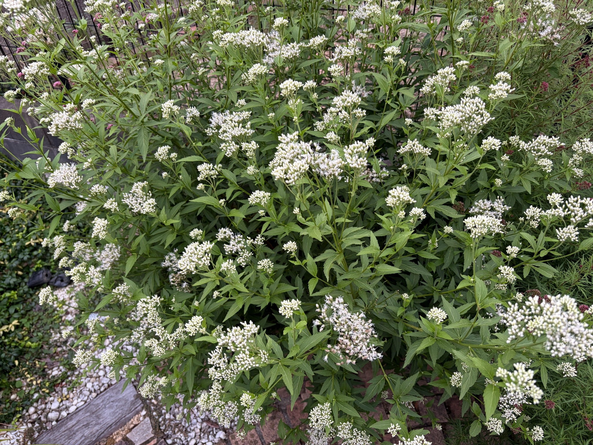

2026/10/04 白い蕾を残しながら、複数の花房で開花
2026年10月4日の白フジバカマ（原種系）は、株の広い範囲に白い花房が見られます。高く伸びた茎の先だけでなく、中央や左右へ広がる枝、手前の低い位置にも大小の花房が並んでいます。緑の葉の間に白い花房が重なり、奥から手前まで立体的に広がっています。

現在の開花状況を細かく見ると、白く見える花房の多くには、まだ開いていない蕾が密に集まっています。蕾は細長く、先端が丸みを帯び、上向きや斜め向きに並んでいます。ひとつひとつの輪郭がはっきり見える花房も多く、白い花房が目立っていても、すべての花が開いているわけではありません。
写真の中央上部や右上部、右側の中ほどには、白い蕾がまとまって並ぶ花房が見られます。花房の表面には粒のような蕾の形が残り、糸状の部分が広がった花房とは見た目が異なります。大きな花房にも蕾が多く残っており、これから開く部分を株のあちこちに確認できます。
一方、中央付近や左側、手前の下部など、複数の場所では花が開いています。開いた部分では白い糸状の部分が外へ伸び、蕾だけの花房よりも輪郭が柔らかく、ふんわりと見えます。特に手前の下部では、糸状の部分がまとまって広がった花房が目につきます。
同じ花房の中でも、すべてが一度に開いているわけではありません。白い蕾が密に残る部分の隣で、糸状の部分が伸びているものもあります。花房全体が蕾の状態に近いもの、蕾と開いた花が混在するもの、開いた部分がまとまって見えるものがあり、咲き具合にはばらつきがあります。
株全体を見ると、蕾のまとまりがまだ目立ちます。開いた花は複数の場所に見られますが、すべての花房が糸状の花で覆われている状態ではありません。多くの蕾を残しながら、花房ごとに開花が進んでいるところです。写真1枚では、どのくらいの割合で咲いているかを正確に数えることは難しく、まだ満開と呼べる状態ではないように見えます。
9月28日にも、多くの枝先に白い花房が広がり、蕾と開いた花が混在していました。白く見える部分にも蕾が含まれており、その時点でも株全体が満開になった状態ではありませんでした。10月4日も、その様子が続いています。白い蕾が多く残る一方、中央や左側、手前などの複数の花房で、糸状の部分が広がっています。
前回と今回では、同じ花房を同じ角度から撮影して比べられるわけではないため、開いた花房が何房増えたのか、株全体の開花がどの程度進んだのかまでは分かりません。それでも、今回も蕾と開いた花を一緒に見ることができました。9月28日に続く開花途中の姿として、蕾がどのくらい残っているか、どの位置の花房で花が開いているかを記録しておきます。
花房の下には、細長い緑の葉が茎に沿って重なっています。上へ伸びる茎と、左右や手前へ広がる枝がそれぞれ花房を支え、花房の高さや向きにも違いがあります。葉の間には小さな花房も見られます。今後は、目立つ大きな花房だけでなく、低い位置や枝の途中にある花房の咲き具合も見ていきたいと思います。
10月4日は、多くの白い蕾と、糸状の部分が広がった花を同時に眺められる状態でした。引き続き、蕾のまとまりがどのように開いていくか、花房ごとの変化を記録していきます。